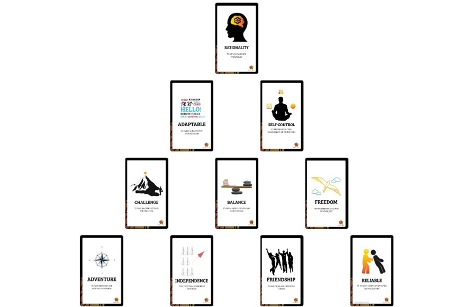
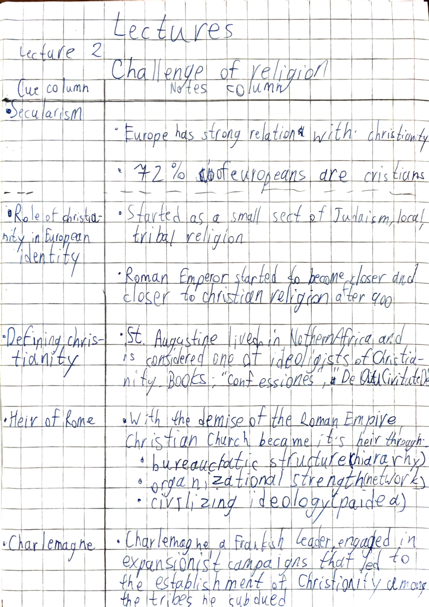
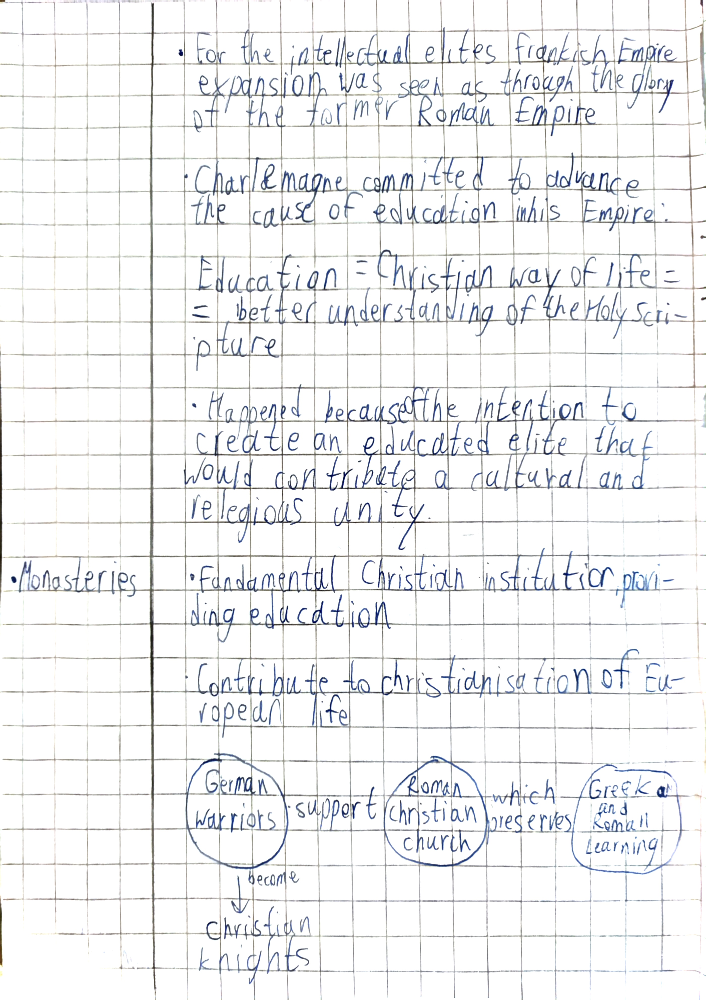
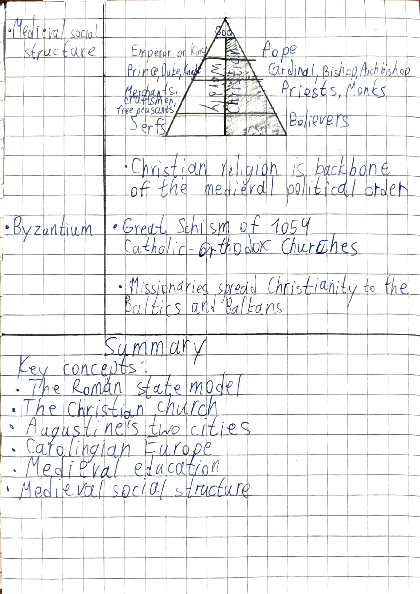
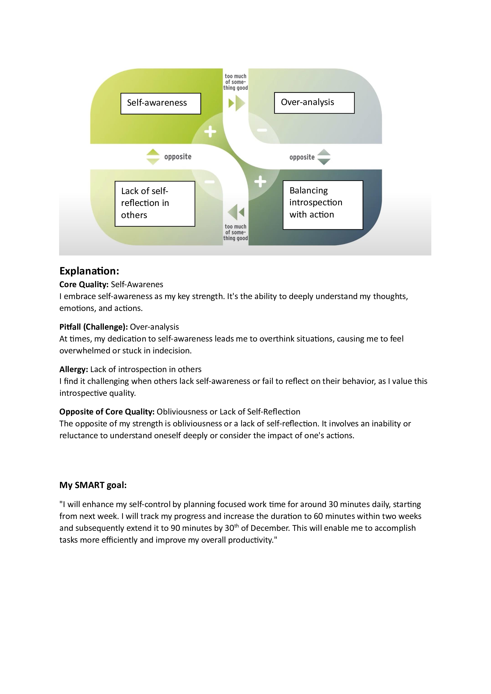
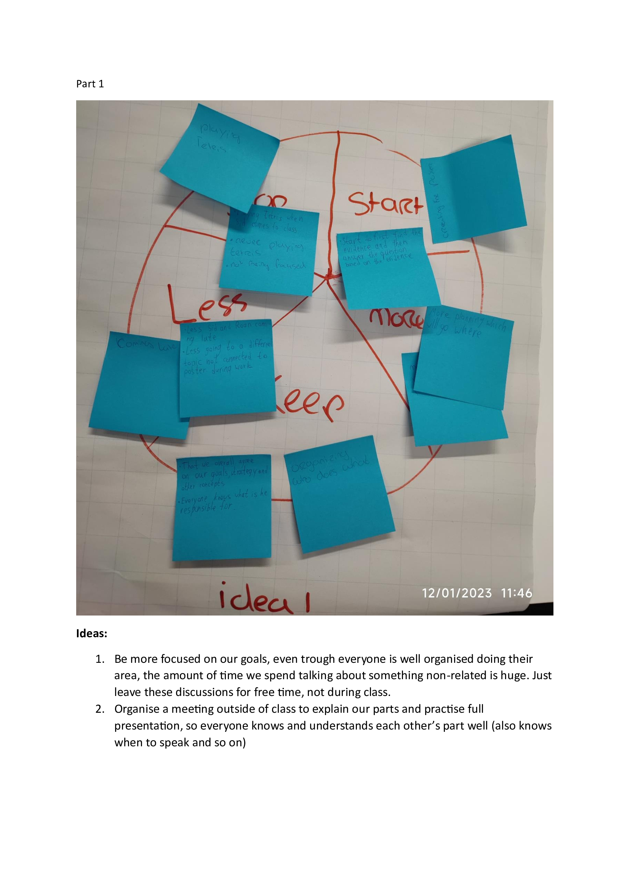
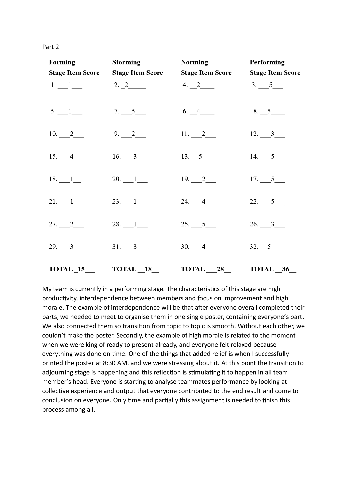
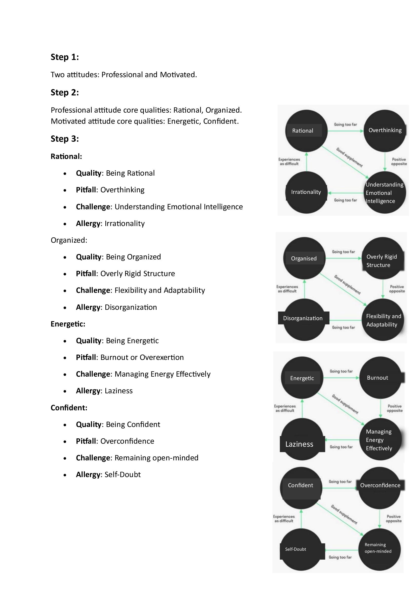
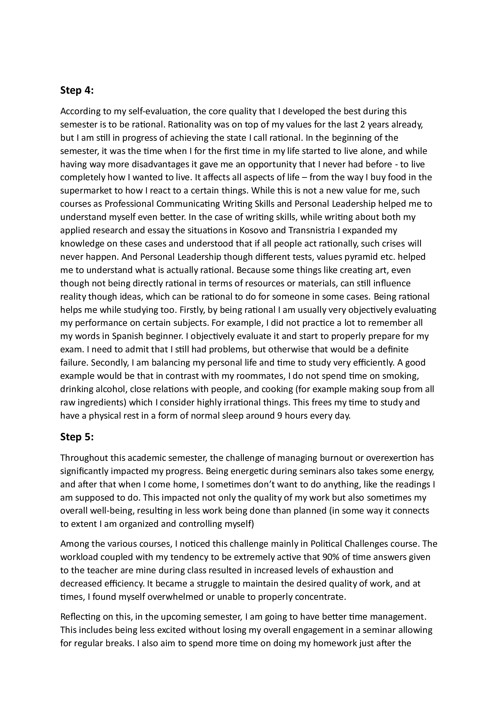
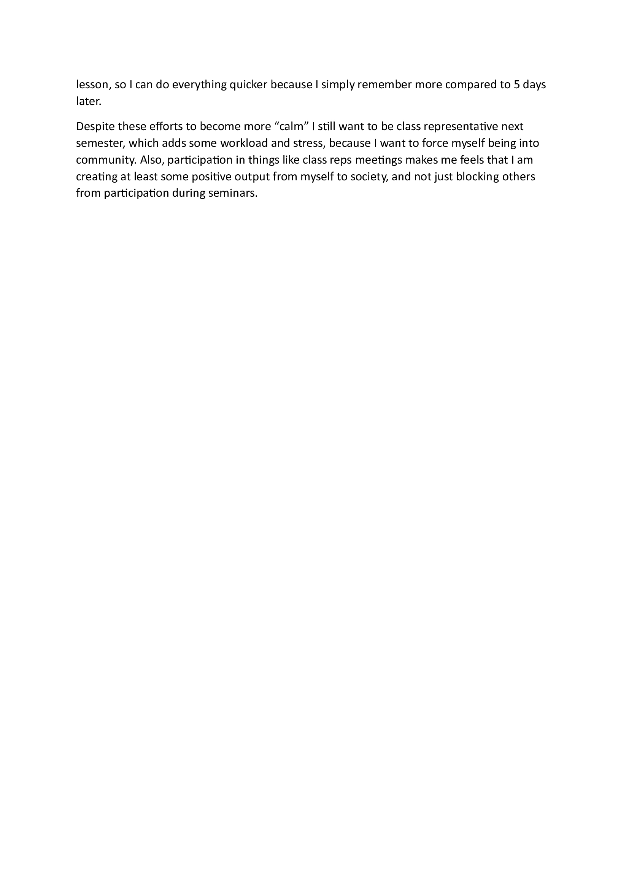

About Me
Hi! My full name is Hryhorii Bavykin, but everybody calls me Grisha. Right now I am studying at European Studies 4 year programme at The Hague University of Applied Sciences. My favourite subject is Political Challenges, since I really like history, geography and modern politics. In my free time, I like to code (for ex. this website or my computer game), go for a walk or write something about politics or other topics for my personal Telegram chanell, where I also use my photo and video-editing skills, which are still pretty basic, but not too bad. You can navigate through my oesonal digital portfolio website trough buttons above in the header. Also, there is zoom for every picture that you will see, so just click on it to make it larger. This website was written by me on basic HTML and CSS codes and it hosted on GitHub Pages. If you are interested how it looks inside, you can exlore it my GitHub repository
Goals for Semester 2
My personal goals for semester 2 are: -- completed!
- become more efficient in time management -- completed!
- start doing more sports (maybe voleyball in the uni?) -- completed!
- make new friends? -- not really
- become better at chess, start playing online and get a good rating -- kind of yes!My LinkedIn profile:
https://dehaagsehogeschool-my.sharepoint.com/:w:/g/personal/23007621_student_hhs_nl/Ef7nTjaaHFtFgDwTz8OW31MBnGvLAQ-eWoxOv-dBGtKCKg?e=U2EAARMy CV:
https://dehaagsehogeschool-my.sharepoint.com/:w:/g/personal/23007621_student_hhs_nl/Ef7nTjaaHFtFgDwTz8OW31MBnGvLAQ-eWoxOv-dBGtKCKg?e=U2EAARFinal Portfolio Assignments
Semester 2
FP Assignment 1: Reflection Semester 2
1. Overall Progress Thinking back about what I wanted to change in semester 1, I feel like I achieved almost everything I wanted. I achieved greater time management, started doing more sports (going to volleyball twice a week + the swimming pool once a week that I was doing before), and I became better at chess, as planned. Moving to new skills, I became way better at my Spanish, which I was studying at the university + additionally all this time, learning new topics and new tenses like Preterito Indefenido or Preterito Perfecto (Foreign languages skills, BoKSA). Also, I gained a lot of knowledge about European decision-making processes, which I had limited knowledge of before. This is not only connected to university, but also to my own initiative to expand this topic in one of my articles about Ukrainian grain protests in Poland and the potential embargo, and thus I learnt more as well using real-world example. 2. SMART goal reflection At the end of the previous semester, I set myself this SMART goal (extracted from FP Assignment 4, 1st semester): "Improve seminar participation by dedicating a focused 30-minute time slot after each session for immediate homework, aiming to achieve a 50% completion rate by the end of the upcoming semester, from 8th January to 15th July, without compromising other essential activities, thereby optimizing learning retention and time management." I believe that I completed this goal because I achieved everything described above. I kept my seminar activity on a decent level (not worse than before), I started to complete somewhere near half of my homework on the same day I had my seminar, and I didn't compromise my hobbies by using this strategy (and even increased the amount of them). For example, after each Spanish-2 seminar which I have each Monday, I do my homework when I arrive home after taking lunch at the university. Usually, I would waste this time watching videos, since my seminar finishes at 17:00, and I am back home only around 18, which gives me insufficient time to do something big (for ex. work on research). But since doing Spanish homework usually takes about an hour, I am doing it then and as a result, I am not doing it on Wednesday or Thursday morning when I have my next Spanish class and instead have a normal break if it is Wednesday or sleep more on Thursdays.
FP Assignment 2: Global Citizenship Programme
1. Main insights from each module of Global Citizenship Programme In the first e-module I mostly explored and analysed my internal world where I reflected on situations that shocked me and my social environment and constructed my own values pyramid. The second module was about thinking who I depend on, what cultures/identity do I belong to and main things that define me. Also, some topics were about examining my reactions to different people appearances and behaviours, that may have biases and assumptions that I may hold (I actually do not have many). Finally, the last module focused on my personal impact on the people around me and how do I behave in different situations. It also gave an insight on goal-setting challenge creation. For example, when I needed to fill each part of what I do the best, what I like more, what aligns with my goals and how can I complete the challenge. 2. About Personal Development Activity To achieve my personal development activity such skills as flexibility and creativity really came in hand. I also needed some patience, since sometimes relying on someone else to complete your tasks can be problematic and not fast. I showed that I am always available to help others and can be patient enough. During both of my PD activities, I was active, providing some ideas for improvements. Thought my participation as a responsible for the PowerPoint presentation during Student Schuman congress I wrote dozens of emails and messages to fully understand the image of final product that was asked from me. I also felt very committed to contributing to the SDG #10 which is reducing inequality when putting slides from speakers from absolutely different cultural backgrounds from Spain or India, that made the 11th Shuman Student Congress possible. I learnt to be flexible and to strictly divide the work so everyone knows exactly what is expected from each member of a team to avoid any potential surprises when someone did not do something that was not discussed, but everybody thought it will be completed by someone else. Overall, on macro-level I contributed to SDG number 4 "Quality Education" though being one of the class representatives. I helped to find answers to my classmates' questions, collected feedback and presented data during class representative meetings which are done to make the student's experience simpler and more interesting. 3. Global Citizenship Journey: My initial understanding of Global Citizenship was that it means that if you are a global citizen that means you can freely travel around the world, easily live and communicate from any cultures and can easily adapt to societal norms and values of different county. After completing my e-modules and Personal Development activities my definition of Global Citizenship had definitely changed expanded, since now I believe that it is not that much about physical ability and skills, but rather requires global citizen to have sense of belonging to a broader, global community and awareness of global issues such as climate change, poverty and others that affect everyone on Earth. Global citizens should also be active to promote values such as tolerance, respect and justice which will help to unity the world against common problems and expand international cooperation. During Global Citizenship Journey I discovered that I am. I have strong societal norms that I believe in, which are however not directly connected to my cultural background, but rather to overall values that I have which are widely shared across Europe and western culture overall, which includes United States, Australia etc. I guess also applicable to most of democratic countries to, with the same human rights ideals. These norms go through what is the fair way the person should behave to other person in particular situations or what would be expected from the person. Some of my values shows below also have to do something with family relationships, the way communication (in my case - direct and honest), social behaviour (active, etc.). Though probably that is already more personal, because of course values are important part of my internal world as well, which relates to more how I manage my time, health, interests, new connections or adapt to different environments. Regarding the growth, I personally do not think I actually improved during or because of Global Citizenship programme. Because being a person who already lived in 3 different countries (Netherlands is the 3rd one) and visited as a tourist dozen of more, all with pretty diverse cultures. And combined with very tolerant attitude, in which I grew in I think I already had almost everything any Global Citizen should have. However, this programme really helped me to understand basically what I do stand for, so realization about everything that I partly covered above is partially because of this programme.
FP-Assignment 3: Career Orientation
During the alumni lectures, four former students shared their career journeys with us. Each speaker had a unique story about ending up working in absolutely different fields, demonstrating how diverse are paths that European Studies students can take after graduating. My takeaways were thus different from each of them. Lisa, a trainee for Kingdom Affairs, emphasized that you always need to do something that you like and not choose a career path over passion; Luka, who currently works at the Netherlands Institute of International Relations and helps already established diplomats to become better, highlighted how important is it to gain experience besides the studies; Ileana, who decided to go into marketing, underlined the significance of not being afraid (even if you don't want to) to get out of comfort zone always trying something new to achieve success, while Maurice, current policy advisor in Ministry of Foreign Affair in the Netherlands, underscored how networking stands as a key to new possibilities and grow professionally. It can also help just to know people and stay visible in the organization you work for. One of the topics that found the most long-term storage in my brain is social networking. Ileana, Luka and Maurice, in particular, shared thoughts about the importance of it in today's dynamic job market. Illena spoke about, not depending on how scary it might be, you need to speak with people to make new valuable connections and remember that people that you are scared to approach are there for the same goal as you. Maurice on the other hand recalled how networking during his internship led him to actually get a job and explained how people often stay to drink coffee after work just to expand or build their professional network, rarely actually talking about the work. He also highlighted that it helps you to be visible in your professional environment and then, if someone has a task related to your topic, and they know that you are the one who has knowledge about it, they will address you to ask some questions. "Networking is the key" - Luka said when talking about internship abroad. Another topic that really addressed my concerns was the transfer from the university of applied sciences to a research university, which I am also planning to do after I finish my studies here. Luka and Ileana needed to go through this, including the pre-master programme before applying for the master's programme. They both mentioned the transfer, but since not much information was given, I guess it went smoothly for both. Their experiences had somewhat calmed down my stress about that, since now I know that people go through it after my programme and succeed in their studies. After hearing the stories of all 4 Alumni speakers, I can say that I got some valuable information, that already affected my view on a few topics regarding my future career orientation. I will prioritise participating in all events that match my career interests seeking out opportunities to gain experience outside of my studies by engaging in presentations, and networking events and maybe even volunteering within my field of interest. By remaining adaptable and proactive, I aim to achieve success in my career and develop my communication skills. Overall, the Alumni lectures were very relevant to my career goals, I found them really informative and interesting, and the impact alumni lectures had on me extended far beyond the AULA.
Semester 1
Mandatory Knock-Out Assignments
Cornell Notes: Political Challenges Lecture
Cornell note-taking technique practice
  Email Inbox
Organizing my email inbox.


Ofman + SMART goals
Group assignment: reflect on teamwork
 Group assignment: reflect on Individual performance
You can access my feedback on every person in my group throught these links:
Dimistrios Evangelos Roan Sid MeGeneral reflection semester 1
I made some noticeable progress thought his semester. Personal Leadership helped me to state for myself what are my key values and goals and determine what I need to do to fully achieve them. The first thing I am most proud of is that I am very motivated, or specifically energetic . I have been very active during all my classes, especially Political Challenges. The decision to become a class representative was also an important step to play active role in my class social life. I am happy that I helped some people with their problems and teachers to efficiently communicate with class. I consider that I fully achieved this goal and if you ask anyone in the class about who was the most active at almost any time, that would be me. Second goal that I partially achieved, but I am still in a progress, is an attitude to be organized, which is very important, especially if there are a lot of tasks that no one except of yourself can force or motivate you to do. I think that I did not fully achieve it because I still find it hard to stand up fro the bed and do something, which results in me starting to work 10 or 20 minus later than planned initially. Even setting a timer does not always help. That is why I usually use my big break between 12 and 15:30 on Monday to sit and work in the THUAS library, where I have way less things that distract me and I feel more focused. Overall, I became way more organised and active closer to the end of the semester, while at the start they were kind of missing.
Reflection Core Quadrants



Individual reflection of evaluation groupwork
Overall, there were two key factors that influenced the complete success of our group. The first one, which was obvious for us even before we did most of the work based on our Starfish method column with "Keep" text is how we divide our work. Each seminar or meeting we clearly divided between who does what, when, and who can help. Another thing was the level of responsibility each team member had. Everyone did what was expected from him, with no delays or other problems. This essential easiness of work played a main role in our success. We never experienced the situation that someone covers someone else and does his work, or that without help the person can't complete his part. This made the process, easy, fast, and efficient. Moving to my own performance, I think that I positively affected our teamwork level. Firstly, I am the one who proposed to meet for the first time outside of seminars, so I essentially started the performance part of the process. And when we met, I was the only one who completed my work beforehand, so I stimulated others to finish that part on Tuesday, so we have Wednesday left to finish all details and make a poster. Now, analysing the feedback I received from my teammates, I found a lot of similarities. First, and the most obvious one was the thing about me being distracted by Tetris, which no one liked of course. But there were positive sides too, I am happy that others agree that I did my part great using graphs created in Excel and presented it well. Also, Sid admitted that I knew my topic great, as well as being aware of what others are doing. Except playing Tetris and my ability to focus, I did not receive any suggestions, but I will consider turning on focus mode on both my laptop and phone next time so I won't receive notifications and thus be less distracted.
SMART goals for semester 2
1. Enhancing Seminar Participation and Time Management Goal (connected with being pitfall Burnout or Overexertion:
Improve seminar participation by dedicating a focused 30-minute time slot after each session for immediate homework, aiming to achieve a 50% completion rate by the end of the upcoming semester, from 8th January to 15th July, without compromising other essential activities, thereby optimizing learning retention and time management.
2. Managing Energy and Stress as a Class Representative Goal (connected with core quality was to be rational):
Efficiently fulfill class representative duties within a dedicated 2-hour weekly time frame while incorporating stress-relief practices and maintaining a stress journal to monitor and manage stress levels and energy effectively throughout the semester, promoting rational decision-making and preventing burnout from increased responsibilities, from 8th January to 15th July.
SMART Goal 1: Enhancing Seminar Participation and Time Management
- Specific (S): Improve seminar participation by maintaining a balanced level of engagement without overexertion. Allocate focused time for homework right after the lesson to capitalize on fresh knowledge retention.
- Measurable (M): Increase focused homework completion immediately after each seminar session to at least 50% by the end of the next semester.
- Achievable (A): Evaluate the current time availability after each seminar to allocate a minimum of 30 minutes for immediate homework completion without compromising other essential activities. Identify time slots that align with peak concentration levels for optimal productivity.
- Relevant (R): This goal is directly related to improving time management, maximizing learning retention, and minimizing burnout by balancing engagement during seminars and efficient completion of related tasks.
- Time-bound (T): Achieve the 50% completion rate for immediate post-seminar homework within upcoming semester, starting from 8th of January to 15th of July.
SMART Goal 2: Managing Energy and Stress as a Class Representative
- Specific (S): Fulfill the role of a class representative effectively while managing personal energy levels and stress. Implement strategies to stay engaged without overexertion.
- Measurable (M): Dedicate focused time for class representative duties without affecting personal well-being. Maintain a stress journal to track stress levels and energy management over the semester.
- Achievable (A): Plan specific time slots, totaling no more than 2 hours per week, exclusively for class representative responsibilities. Integrate stress-relief practices like mindfulness or short breaks during peak stress periods to manage energy effectively.
- Relevant (R): This goal aligns with maintaining rational decision-making by managing commitments effectively, balancing engagement within the community, and avoiding burnout as a result of increased responsibilities.
- Time-bound (T): Monitor stress levels and energy management throughout the semester. Regularly assess and adjust the allocated time for class representative duties to ensure a balanced workload and well-being, starting from 8th of January to 15th of July.